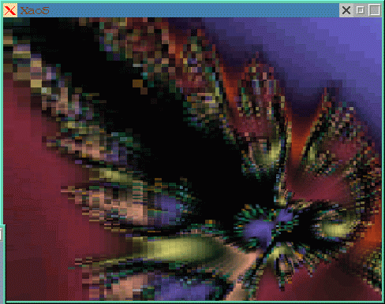
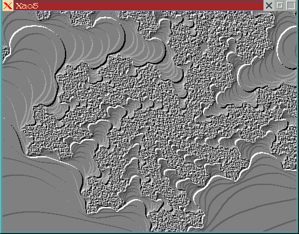

![[ TABLE OF CONTENTS ]](../gx/indexnew.gif)
![[ FRONT PAGE ]](../gx/homenew.gif)


The Linux software world has been extraordinarily fecund lately. I could write all day every day and still not adequately describe and evaluate the many new software packages released in the past couple of months. But I need to backtrack a bit and bring up-to-date some of the reviews from past issues of the Gazette (otherwise I'll be spending much time answering e-mail concerning broken links, etc.).
I LG #21 I wrote a short piece about the first public beta of Marco Macek's window-manager icewm; afterwards I continued to use it from time to time until it began crashing at random intervals, which discouraged me. Lately I'd noticed several new icewm releases mentioned on various Linux web-sites, so I thought I'd try the most recent one (as I write this, the current version is 0.8.16; they have been incrementing rapidly, so there is probably a newer one by the time you read this).
I've probably tried just about every window-manager out there; perhaps I'm becoming a trifle jaded, but the prospect of spending hours, if not days, learning to configure a WM to my liking isn't too appealing. I did just that with fvwm2 a couple of years ago and just don't have the time or inclination to repeat the process. I've tried Enlightenment, Afterstep and WindowMaker, and though I appreciate their features and configurability, I haven't yet devoted the time needed to effectively use them. Icewm is by design not as complex and feature-laden as the above-mentioned managers, therefore developing a pleasing and usable configuration can be done in a fairly short time.
Memory usage is another factor to consider. Most window-managers tend to use about one megabyte of memory, but the various modules (such as fvwm2's pager and Afterstep's numerous add-ons) add significant amounts. Although minimalist managers such as wmx are available, they seem to use nearly the same amount of memory as fvwm2 (in wmx's case, possibly because of the use of the shaped window X-extension). Icewm uses a remarkably small amount of memory (averaging about 600-800 kb. on my system), considering that it does 90% of what the others do.
I asked Marco Macek what his original motivations were when he started
coding icewm, and this was his response:
Well, I was using fvwm and while it was quite configurable, there were lots of little things that I could never get right, even if by hacking the source. I wanted the wm that would feel right to users used to CUA-style GUIs (windows, os2, motif). fvwm95 was an improvement (I contributed a few things to it), but since I wanted a more configurable look, I quickly realized that writing it from scratch was the right thing to do. The result seems to be a leaner WM that feels good to use. At least to me (and it seems quite a few other people). For me, the feel is more important than look. People get much more used to feel (keystrokes, behaviour) than look. That is the reason for configurable look but not feel. Changing the look occasionally makes things interesting while the feel should really stay the same.
Icewm isn't difficult or time-consuming to set up. Several pre-defined themes are included, and the configuration variables are split into several files, making it easy to edit, say, just the colors or menus without having to wade through a long config file looking for particular sections. The icons can take some time, as they need to have particular sizes and filenames in order for icewm to be able to make use of them. Any item in the root menu can have a mini-icon displayed next to its menu-entry, with the same icon used as the leftmost titlebar icon. John Bradley's excellent xv graphics program can be used to resize an *.xpm file to 16x16 and 32x32 pixels, which are the two sizes needed. The icon files then need to be renamed to [name]_16x16.xpm and [name]_32x32.xpm and put in the window-manager's icon directory, which defaults to /usr/local/lib/X11/icewm/icons.
The menu configuration file, located in
/usr/local/lib/X11/icewm/menu has entries in this format:
prog Xvile edit xvile
The first word after "prog" is the name as you want it shown in the menu, the second word is the prefix of the xpm icon-file (that is, the part before the underscore), and the third word is the command which actually starts the program. If there are no icon-files named edit_16x16.xpm and edit_32x32.xpm error messages will be displayed on the console from which X was started but they are harmless and default icons will be used in the titlebar, while there won't be one at all next to the corresponding menu-entry.
If you happen to try editing any of the theme configuration files (where the various frame and title-bar colors are set) you will notice that the colors are specified in hex format (such as "rgb:E0/E0/E0"), which isn't too intuitive. After configuring various X windows programs for a while, you probably will be able to remember several favorite color-names from the rgb.txt color-database file, such as darkslateblue and navajowhite. This isn't mentioned in the icewm docs, but I've found that these easily-remembered color-names can be substituted for the hex names and will work just as well. Just remember to put the names within double quotes.
One feature of fvwm which I've grown accustomed to, and which icewm can also do, is displaying certain windows without a titlebar and/or appearing on all desktops. The icewm docs explain these settings. A pager isn't included, but the Afterstep-like "workspaces" icewm provides perform a similar function. The win95-like taskbar, complete with a start-menu, is a help while gaining familiarity with the window-manager, but its functions are available using either the keyboard or the root-menu, and it can be turned off by setting ShowTaskBar=0 in the preferences config file.
Admittedly, this sort of desktop configuration is much easier with KDE beta4, but you pay for the ease of using and configuring KDE; it uses a quite a bit of memory and takes an awfully long time to start up. Of all the window-managers I've used, icewm and Chris Cannam's wmx seem to be the quickest to start.
I think that with the release of version 0.8.16 icewm is stable enough for heavy use and deserves wider exposure. Marco Macek is currently adapting icewm to the GNOME desktop, and further enhancements are likely.
Naturally, as soon as LG #27 appeared, the link I had provided for the binary Maxwell word-processor distribution was no longer valid. The Sunsite incoming directory was cleaned up for the first time in many months and the file was moved. Here are two links which hopefully will work for a while:
Still no news on whether Maxwell's source will be made available or not.
NEdit version 5.02 was released recently. It's available from the home site. This Motif-based editor has become increasingly popular due to its easy-to-learn interface and intuitive mouse support. Its CUA-style menus and keystrokes are easy to learn for users coming from a windows or mac background, and it's a good choice for people desiring a powerful, syntax-highlighting editor complete with a native macro language. If the prospect of learning Emacs or VI is daunting, NEdit is ideal.
Version 3.00 of the fast interactive fractal zoomer XaoS was released recently by its maintainer Jan Hubicka of Czechoslovakia. Xaos is now officially a part of the GNU project; I'm not sure just what this means beyond receiving Richard Stallman's blessing and new availability from the GNU FTP site.
This version has many new features, though the interface to them is still a
series of text-based information panels. An interesting animated tutorial is
now included which can be accessed by typing h twice. There are
now so many new options and filters that the tutorial is very helpful in
gaining an overview of XaoS's powers. Check out the "motion blur" filter,
which really makes you feel like you are plunging headlong into the fractal
depths. Here's a small screenshot:

Another nice effect is gray-scale embossed fractal zooming, which looks
like this:

XaoS has really come a long way since the first version I tried. Keep up the good work, Jan!
Version 3.1 of XEphem, Elwood Downey's astronomical program which I wrote
about in LG #25, has been released. Noteworthy is the announcement on the
XEphem home page of
recent successes compiling XEphem with Lesstif rather than Motif. Here are
some of the other new features:
Sky View:
General:
In my review of the WordNet dictionary/thesaurus package last issue I mentioned that it would be useful to be able to compile the source, and that success had eluded me. Christopher Richardson e-mailed me a suggestion which enabled the WordNet files to build here; it's worth trying this if you have installed the package. The change is small, just a couple of lines in the top-level Makefile.
Try commenting out line number 101 (LOCAL_LDFLAGS = -static),
then change line 135 from
#WNB_LIBS = -ltk4.2 -ltcl7.6 -lX11 -lm -ldl -lsocket -lnsl
to
WNB_LIBS = -ltk4.2 -ltcl7.6 -lX11 -lm -ldl # -lsocket -lnsl
The other changes needed in the Makefile are explained well in the comments. A natively compiled WordNet wish interpreter is only 61 kb., whereas the included statically-linked interpreter is 1.39 mb.
John Davis, developer of the S-Lang programming language and a collection of excellent programs which make use of it, has released a new version of the S-Lang library package, along with new versions of the slrn newsreader, the jed emacs-like editor, and the most pager. One of the most interesting changes is the inclusion of exhaustive and readable documentation in a variety of formats for the S-lang language. If you install the new S-lang library and header files any applications which use S-lang will have to be recompiled.
Scott Draves has released a new version of his Bomb interactive visual stimulus package, which I reviewed in LG #18. The svgalib and X programs have been merged into one executable, and it now works in X windows on 8, 16, and 32 bpp displays. An interesting new feature is the addition of Scheme-based scripting. GNU Guile is the Scheme-variant which Bomb needs, and a compiled libguile and other necessary files are included in the archive along with a script which is supposed to run Bomb with these files loaded rather than with any Guile version which might happen to be installed elsewhere. I couldn't get it to work, though it looks to be an interesting development. Several sample Scheme scripts are included as examples. Rather than needing separate executables for console use (using svgalib) and X, this new version will detect the current display-type and adapt itself accordingly. Bomb in an X session is no longer limited to 8-bit (256 color) displays; I've been using it in 16-bit X sessions and it works well, though it runs somewhat slower than in in a full-screen console display. Perhaps when Guile development stabilizes and a new official release is available (1.2 is the current release), scripting Bomb's behaviour will be possible for Linux users. Perhaps my Guile problems with bomb are due to my particular set-up; if it worked for you, let me know!
Version 1.18 of Bomb is available from this WWW site.